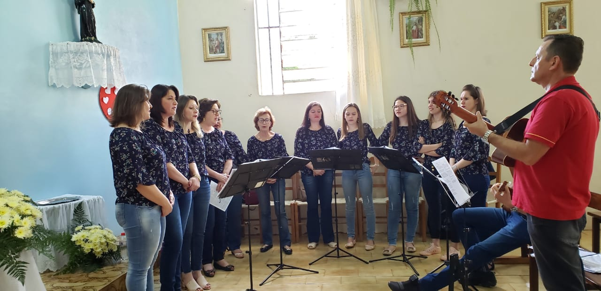
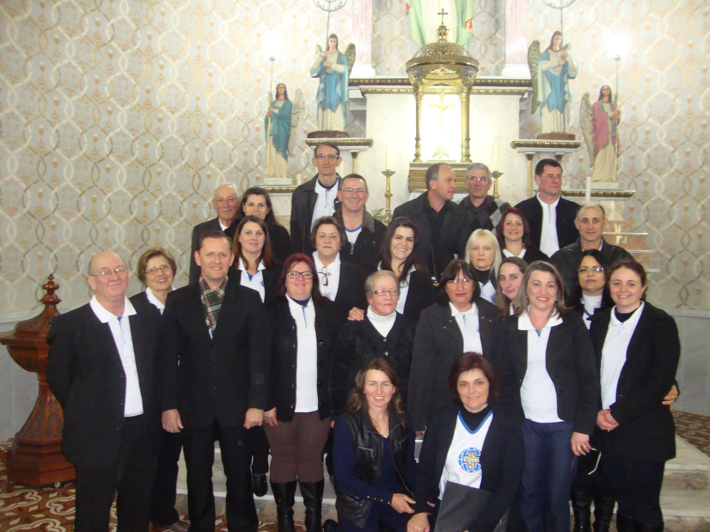

Coral municipal de São Jorge
Esté foi onde Paulo iniciou a ser regente de corais em 2010, e está ainda em
atividade

Coral Luz e Vida de Guabiju
Formado por professor estaduais e municipais do município com o intuito de descontração e
lazer.

Cursilho de Nova Bassano
Criado essencialmente para cantos de igreja onde se apresenta duas vezes por mês.
